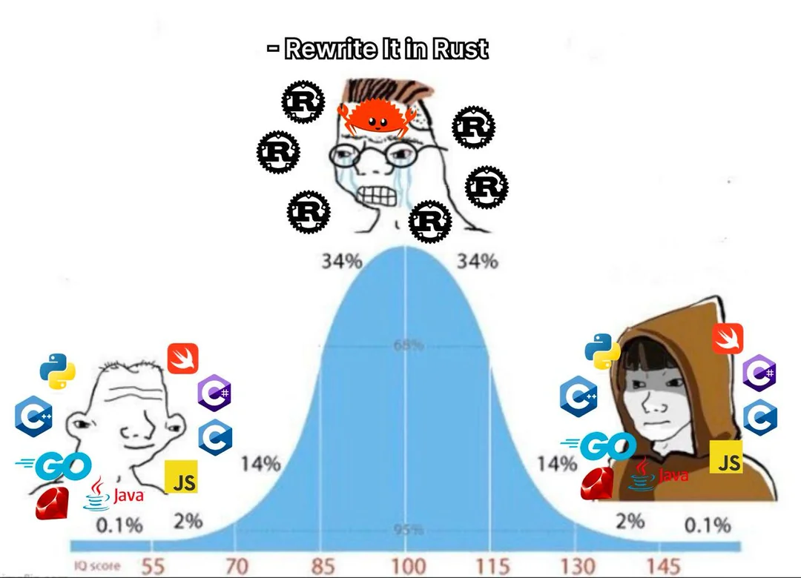

Oxidize JavaScript Toolchain
What Do We Mean by “Tooling”?
Transpilers reshape source code to run on specific runtimes or browsers.
Bundlers stitch many modules and assets into a few deployable bundles.
Linters enforce correctness, catch bugs, and guide best practices.
Formatters keep code visually consistent and easy to read.
Transpilers: Modern JS to Compatible JS
From ESNext/TS/JSX to browser-compatible JavaScript.
// Source (ESNext)
const greeting = `Hello, ${user.name || "friend"}!`;
Transpilers: Modern JS to Compatible JS (cont.)
What the transpiled output might look like.
// Output (ES5-ish, simplified)
var name = user && user.name ? user.name : "friend";
var greeting = "Hello, " + name + "!";
Transpilers: JSX to JavaScript
Turn JSX syntax into plain JavaScript function calls.
// Source (JSX)
function Button() {
return <button className="primary">Click me</button>;
}
// Output (JavaScript)
function Button() {
return React.createElement(
"button",
{ className: "primary" },
"Click me",
);
}
Live demo idea: try a Rust-based transpiler playground such as swc.rs/playground.
Bundlers: Bundle for the Browser
Take multiple modules and ship a single browser-ready bundle.
// src/index.js
import { add } from "./math.js";
console.log(add(1, 2));
// src/math.js
export function add(a, b) {
return a + b;
}
// dist/main.js (simplified bundle)
(function () {
function add(a, b) {
return a + b;
}
console.log(add(1, 2));
})();
Bundlers: Resolve Node-style Imports
Turn import from packages into code the browser can actually run.
// src/index.js (what you write)
import _ from "lodash";
console.log(_.camelCase("hello world"));
Bundlers: Resolve Node-style Imports (cont.)
// dist/bundle.js (highly simplified)
(function (modules) {
function __webpack_require__(id) {
const module = { exports: {} };
modules[id](module, module.exports, __webpack_require__);
return module.exports;
}
__webpack_require__("./src/index.js");
})({
"./src/index.js"(module, exports, __webpack_require__) {
const _ = __webpack_require__(
"./node_modules/lodash/lodash.js",
);
console.log(_.camelCase("hello world"));
},
"./node_modules/lodash/lodash.js"(module, exports) {
// lodash implementation here...
},
});
Linters: Catch Bugs Early
Static checks that prevent common mistakes.
// Before (ESLint screaming)
function greet(name) {
message = "Hi " + name; // ESLint: 'message' is not defined
if (name == "admin") { // ESLint: Expected '===' and strict equality
console.log("Welcome"); // ESLint: Unexpected console statement
}
}
// After (ESLint fixes)
function greet(name) {
const message = `Hi ${name}`;
if (name === "admin") {
return "Welcome back!";
}
return message;
}
Formatters: Make Code Consistent
Automatic formatting so style debates disappear.
// Before
const query={limit:10,offset:0, filters:[ "rust","tooling" ] }
function load(){return fetch("/api/search",{
method:"POST",body:JSON.stringify(query)})}
// After (formatted)
const query = {
limit: 10,
offset: 0,
filters: ["rust", "tooling"],
};
function load() {
return fetch("/api/search", {
method: "POST",
body: JSON.stringify(query),
});
}
Why Do We Need Rust Tooling?
Why Do We Need Rust Tooling?
Let's just rewrite everything in Rust!
Why Do We Actually Need Rust Tooling?
- Faster.
- Both development time for better developer experience and cheaper CI cost.
- Old tools can't keep up with today's scale and needs.
The Old World: JS Tooling
- Babel, Webpack, Rollup as the default stack.
- Node.js, single-threaded, plugin-heavy architectures.
- Designed for correctness and flexibility, not raw speed.
- 2014 → 2015: from 6to5 to Babel, making new JS & JSX run everywhere.
- Backbone of modern JS: powered most webpack-era React/SPA builds.
- Still the most flexible when you need deep AST tooling or custom transforms.
- 2014: turned
require/importgraphs into browser bundles. - React & SPA decade: dev server + HMR made webpack the default for big front‑ends.
- Today: still everywhere, but infamous for slow cold builds and complex configs.
ESLint & Prettier
- ESLint (2013): configurable, plugin‑based linter that every major JS/TS style guide built on.
- Prettier (2016): opinionated formatter that turned “save” into “reformat and end bikeshedding”.
- Standard combo: ESLint for correctness + Prettier for layout in almost every modern JS repo.
Rust Compilers You Actually Touch
- SWC: Babel-style JS/TS compiler rewritten in Rust, used by frameworks and bundlers.
- Oxc: a general-purpose JS/TS tooling engine powering linters, bundlers, codemods, and more.
- You usually don't call either directly — you feel them through faster builds and linting.
SWC: Faster Babel Under the Hood
- Replaces Babel/tsc emit in tools like Next.js, Rspack, Deno, Parcel, and Jest.
- Same mental model: parses JS/TS/JSX, runs transforms, emits browser-ready JS and source maps.
- Vendor benchmarks often show order-of-magnitude faster transforms than Babel once you use all your CPU cores.
- Source: swc.rs, SWC vs Babel benchmark.
How You Actually Use SWC
- You almost never run
swcyourself; your framework wires it in. - Common pattern: keep
tsc --noEmit(or your language server) for type-checking, let SWC handle emitting JS. - If your app still uses Babel for heavy TS/JS transforms, you're likely paying a large, avoidable perf tax.
Oxc: The Tooling Engine
- Built as a universal JS/TS tooling engine: parser, resolver, transformer, minifier, and more.
- Powers tools like Rolldown (bundling), Turborepo tracing, Nuxt plugins, Biome config loading, and Tauri codemods.
Oxc in the Wild
- Oxlint (Oxc-based linter) is used at scale by teams like Shopify on the admin console and thousands of early adopters, cutting CI time and cost.
- For most app developers, you'll meet Oxc indirectly through these tools rather than configuring it by hand.
- Source: oxc.rs, Projects using Oxc, Oxlint 1.0 announcement.
SWC vs Oxc: Mental Model
- SWC: drop-in "Babel, but fast" compiler that makes your dev/build steps faster today.
- Oxc: "tooling engine" that helps other tools be fast (lint, bundle, codemod, analyze).
- You don't have to choose one: expect SWC in your builds and Oxc inside your tooling at the same time.
Rust Bundlers & Dev Servers
- Rust bundlers aim to replace webpack/Rollup at the “bundle & serve” layer.
- Three main flavors: Rspack (Webpack-native), Rolldown (Vite-native), and Turbopack (Next-native).
Rspack: What It Is
- Rust-powered bundler from ByteDance that keeps the Webpack mental model and ecosystem.
- Exposes a webpack-like config surface (entry, loaders, plugins, optimization).
- Implements familiar webpack features like HMR, code splitting, and asset handling.
Rspack: Performance & Fit
- On large React apps, vendor benchmarks show Rspack dev cold start and builds can be several times faster than webpack on the same configs.
- If you run a big webpack-based SPA with lots of loaders/plugins, Rspack is usually your best drop-in performance upgrade.
- Source: Rspack Benchmarks.
Rolldown: Why Vite Is Migrating
- Unification: Vite today uses esbuild for dependency pre-bundling and Rollup for production; Rolldown’s goal is a single Rust bundler that handles both.
- Compatibility: supports a Rollup/Vite-compatible plugin API so most existing Vite/Rollup plugins can be reused.
- Positioning: designed as Vite’s long-term default bundler and a drop-in Rollup replacement.
Rolldown: Features & Extras
- Single Rust bundler aiming to handle both dev and build in the Vite/Rollup world.
- Built-in TS/JSX support, Node-style resolution, ESM/CJS interop,
define/inject, and evolving CSS bundling/minification.
Rolldown: Real-World Impact
- Vendor benchmarks report 10–30× faster bundling than Rollup on many workloads.
- PLAID's case study: Rollup+Terser → Rolldown+Oxc cut build time from ~1150 ms to ~40 ms (≈97% faster).
- Source: Rolldown Benchmarks.
Turbopack: Next-native Bundler
- Successor to webpack from the same author, rewritten in Rust and built specifically around Next.js’ needs.
- Acts as a Next-aware bundler: its graph and invalidation model understand the app router, layouts, server/client components, and multiple runtimes (browser, Node, Edge).
- Next.js 16 now defaults to Turbopack for development, with production builds rapidly catching up.
Turbopack: Dev Experience
- 700x Faster Updates: On large apps, incremental architecture makes HMR nearly instant compared to Webpack.
- Faster Startup: Boots up 5,000 modules in ~4s (vs Vite's ~16.6s), bundling only what's needed.
- The Mission: Replacing Babel (17x faster) and Terser (6x faster) was just the start; Turbopack tackles the bundler bottleneck.
- Source: Vercel - Introducing Turbopack.
Rust Bundlers: How to Choose
- Still on webpack? Big SPA with many loaders/plugins → try Rspack as a drop-in upgrade.
- On Vite? Stay put — Rolldown will arrive under the hood as it matures.
- On Next.js? Next 16 already defaults to Turbopack for dev — just use the current defaults.
- Always benchmark your own app: real gains depend on your graph, plugins, and CI setup.
Rust Linters & Formatters
- Rust tools aiming to replace the classic ESLint + Prettier combo with faster, simpler workflows.
- Two big players for JS/TS today: Biome (all‑in‑one tool) and Oxc‑based linters/formatters (like Oxlint).
Biome in One Minute
- All‑in‑one Rust tool that lints, formats, and organizes imports for JS/TS (and more) with a single config.
- Designed as a modern successor to ESLint + Prettier + plugins, with a much faster Rust core.
- Prettier Challenge Winner: Achieved >96% compatibility with Prettier (v1.4.0), claiming the bounty in Nov 2023.
Biome: Performance Benchmarks
(MacBook Pro M1, 2020)
- Formatting: ~25x faster than Prettier (single-threaded ~7x).
- Parallelism: On M1 Max (10 cores), Biome can be 100x faster than Prettier.
- Linting: ~15x faster than ESLint (even without plugins).
- "Biome's linter is fast, but there is room for improvements."
Where Biome Fits Your Stack
- Great fit if you want one tool, one config instead of wiring ESLint + TS‑ESLint + Prettier + plugins.
- Works well for “lint + format on save” without your editor feeling sluggish.
- If you rely on niche ESLint rules, you can still keep ESLint for a subset and let Biome handle the rest.
Oxc‑Powered Linters (Oxlint)
- Oxlint is a fast linter built on the Oxc engine for JS/TS/React code.
- Used in production at teams like Shopify (front‑end platform on the admin console) and thousands of early adopters to cut CI time and cost.
- Oxc is also under the hood in tools like Rolldown, Turborepo, Nuxt, Biome, and Tauri.
Oxlint: JS Plugins Support (Preview)
- Breaking News (Oct 2025): Oxlint now supports plugins written in JavaScript!
- ESLint Compatibility: Runs many existing ESLint plugins without modification.
- Hybrid Approach: Offers an alternative API for better performance while leveraging the vast JS ecosystem.
- "Performance is good, but it's going to get way better."
Rust vs ESLint/Prettier – Mental Model
- ESLint + Prettier: deeply configurable, huge plugin ecosystem, but slow on large monorepos.
- Biome / Oxlint: fewer moving parts and smaller rule sets today, but much faster and easier to run on every save and every CI run.
- Realistic near‑term: keep ESLint where you must, use Rust tools for the majority of checks and formatting.
What Does Fast Tooling Mean in the AI Era?
Or: how many extra “you are absolutely right”s can you get per day?

We call this the “You Are Absolutely Right” Index – a tongue-in-cheek way to measure how often your build system lets your AI pair tell you that you’re right.
Setup: One Task Loop
- You ask an AI assistant to do something on your project.
- Roughly every task takes about 10 minutes of AI work.
- After each task, you run lint + build to check it.
// Legacy loop (webpack-era)
10 min AI work
+ 4 min build (webpack)
= 14 min per validation
// Rust tooling loop
10 min AI work
+ ~0.7 min build (Rust tools)
= ~10.7 min per validation
Per 8-Hour Day: How Many “You’re Absolutely Right”s?
Assume an 8-hour day (480 minutes).
Legacy stack (webpack)
480 / 14 ≈ 34
validations / day
Rust stack (SWC/Rspack/Rolldown/Biome)
480 / 10.8 ≈ 44
validations / day
- Difference: roughly 10 extra “you are absolutely right”s per day from your AI pair.
- Run three tasks in parallel and you’re looking at ~30 extra micro‑dopamine hits of AI validation.
Why Rust Fits JS Tooling
- Memory safety without GC pauses.
- Predictable performance and fine-grained control over resources.
- Easy to exploit multi-core CPUs for parallel work.
Architecture Patterns
- Parse once, reuse AST across multiple tools.
- Parallel transforms across files and modules.
- Incremental builds and aggressive caching for dev and CI.
- Smaller binaries and stable long-running processes.
Limitations and Tradeoffs
- Plugin ecosystems still catching up with legacy tools.
- Incomplete coverage of bleeding-edge proposals and niche transforms.
- Migration costs: configs, build scripts, CI pipelines.
- Type checking still relies on tsc or language servers.
When Not to Migrate Yet
- Stable, medium-size apps with acceptable build times.
- Heavy reliance on custom Babel or Webpack plugins.
- Teams without capacity to rework infra and CI.
Practical Migration Paths
- Step 1: swap Babel for SWC where possible.
- Step 2: introduce Biome for lint/format in a subset of the repo.
- Step 3: adopt Turborepo or similar for monorepo and CI performance.
- Step 4: experiment with Turbopack or Vite + Rolldown on new services.
Measuring Impact
- Track cold start, HMR latency, and full build time.
- Measure CI duration and flakiness before and after.
- Monitor developer satisfaction and iteration speed.
Other Fast Tooling (Non-Rust)
- Rust isn't the only game in town for fast JS tooling.
- There are mature, battle-tested tools built in Go and JavaScript too.
esbuild (Go)
- Written in Go; one of the first "blazing fast" JS/TS bundlers and minifiers.
- Powers things like Vite's dependency pre-bundling and many existing build pipelines.
- Still a great choice for small tools, CLIs, and projects that don't need Rust today.
Rollup, Webpack & Friends (JS)
- Rollup and webpack are JavaScript bundlers with huge ecosystems and plugin libraries.
- They remain the backbone of many large production apps, even as Rust and Go tools appear.
- Rust tools like Rolldown and Rspack are often designed as faster, mostly-compatible successors.
Takeaway
- The "fast tooling" story isn't Rust vs Go vs JS; it's about choosing the right engine for your stack.
- Rust gives you new options, not an obligation to rewrite everything.
Rust Tooling and the Future of JS
- From "JS everywhere" to "Rust under the hood" for tooling.
- Order-of-magnitude speedups unlock new workflows and scale.
- You do not have to write Rust to benefit from it.
- What matters: understanding the tradeoffs and choosing the right stack.